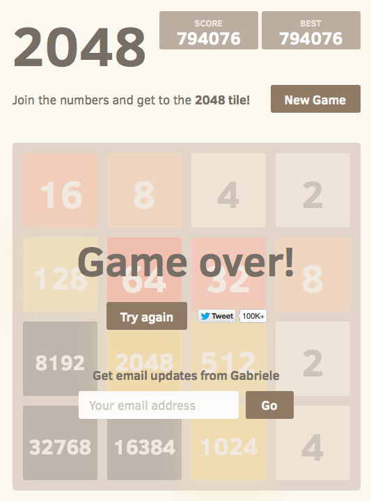
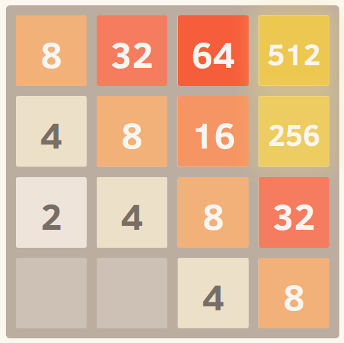
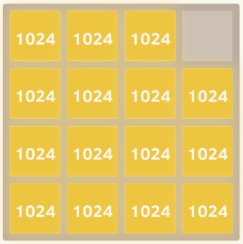

我最近偶然发现了游戏2048。您可以通过在四个方向中的任何一个方向上移动它们来合并相似的图块，以制作“更大”的图块。每次移动后，一个新的方块出现在随机的空白位置，其值为2或4。当所有的方块都被填满并且没有可以合并方块的移动时，游戏终止，或者您创建了一个值为
的方块2048。
第一，我需要遵循明确的策略来实现目标。于是，我想到了为它写一个程序。
我目前的算法：
while (!game_over) {
for each possible move:
count_no_of_merges_for_2-tiles and 4-tiles
choose the move with a large number of merges
}
我正在做的是在任何时候，我都会尝试将瓷砖与值合并2，也就是说，我尝试尽可能少地4拥有2和瓷砖。4如果我以这种方式尝试，所有其他图块都会自动合并，并且该策略看起来不错。
但是，当我实际使用这个算法时，在游戏结束前我只得到了大约 4000 分。最高分 AFAIK 略高于 20,000
分，这比我目前的分数要高得多。有没有比上面更好的算法？
解答
我使用 expectimax 优化开发了一个 2048 AI，而不是 @ovolve 算法使用的 minimax 搜索。AI
简单地对所有可能的移动执行最大化，然后是对所有可能的瓦片生成的期望（由瓦片的概率加权，即 4 为 10%，2 为 90%）。据我所知，修剪
expectimax 优化是不可能的（除了删除极不可能的分支），因此使用的算法是经过仔细优化的强力搜索。
表现
AI 在其默认配置（最大搜索深度为 8）下执行一次移动需要 10 毫秒到 200 毫秒，具体取决于棋盘位置的复杂性。在测试中，AI
在整个游戏过程中的平均移动速度为每秒 5-10 步。如果搜索深度限制在 6 个动作，AI 可以轻松地每秒执行 20+ 个动作，这会引起一些有趣的观看。
为了评估 AI 的得分表现，我运行了 AI 100 次（通过远程控制连接到浏览器游戏）。对于每个板块，以下是至少获得该板块一次的游戏比例：
2048: 100%
4096: 100%
8192: 100%
16384: 94%
32768: 36%
所有运行的最低分数是 124024；最高得分为 794076。中位数得分为 387222。AI 从未失败过获得 2048 块（因此它在 100
场比赛中从未输过比赛）；事实上，它在每次运行中至少获得了一次 8192块！
这是最佳运行的屏幕截图：

这场比赛在 96 分钟内进行了 27830 步，平均每秒 4.8 步。
执行
我的方法将整个板（16 个条目）编码为单个 64 位整数（其中图块是 nybbles，即 4 位块）。在 64
位机器上，这使得整个板可以在单个机器寄存器中传递。
位移位操作用于提取单独的行和列。单个行或列是一个 16 位数量，因此大小为 65536
的表可以编码对单个行或列进行操作的转换。例如，移动被实现为对预先计算的“移动效果表”进行 4
次查找，该表描述了每个移动如何影响单个行或列（例如，“向右移动”表包含条目“1122 -> 0023”，描述了如何行 [2,2,4,4] 向右移动时变为行
[0,0,4,8]）。
评分也是使用表查找完成的。这些表包含在所有可能的行/列上计算的启发式分数，并且板的结果分数只是每行和每列的表值的总和。
这种棋盘表示，连同用于移动和计分的表格查找方法，允许 AI 在短时间内搜索大量游戏状态（在我 2011 年年中的笔记本电脑的一个内核上每秒搜索超过
10,000,000 个游戏状态）。
expectimax
搜索本身被编码为递归搜索，它在“期望”步骤（测试所有可能的瓦片生成位置和值，并根据每种可能性的概率加权它们的优化分数）和“最大化”步骤（测试所有可能的移动）之间交替并选择得分最高的那个）。树搜索在看到先前看到的位置（使用换位表）、达到预定义的深度限制或达到极不可能的棋盘状态时终止（例如，通过获得
6 个“4”方块达到）从起始位置连续排列）。典型的搜索深度是 4-8 步。
启发式
几种启发式方法用于将优化算法导向有利的位置。启发式的精确选择对算法的性能有巨大的影响。各种启发法被加权并组合成一个位置分数，它决定了给定棋盘位置的“好”程度。然后，优化搜索的目标是最大化所有可能棋盘位置的平均得分。游戏中显示的实际分数不
用于 计算棋盘分数，因为它对合并图块的权重太大（当延迟合并可以产生很大的好处时）。
最初，我使用了两个非常简单的启发式方法，为空心方块和边上的大值授予“奖励”。这些启发式算法表现非常好，经常达到 16384 但从未达到 32768。
Petr Morávek (@xificurk) 使用我的 AI
并添加了两个新的启发式算法。第一个启发式是对非单调行和列的惩罚，随着等级的增加而增加，确保小数字的非单调行不会强烈影响分数，但大数字的非单调行会大大损害分数。第二个启发式计算除了开放空间之外的潜在合并数（相邻的相等值）。这两种启发式方法用于将算法推向单调板（更容易合并），并推向具有大量合并的板位置（鼓励它在可能的情况下对齐合并以获得更大的效果）。
此外，Petr 还使用“元优化”策略（使用称为CMA-ES 的算法）优化启发式权重，调整权重本身以获得可能的最高平均分。
这些变化的效果是极其显着的。该算法从大约 13% 的时间达到 16384 瓦片到达到它超过 90% 的时间，算法开始在 1/3 的时间内达到
32768（而旧的启发式从未产生过 32768 瓦片） .
我相信启发式方法仍有改进的余地。这个算法肯定还不是“最优”的，但我觉得它已经非常接近了。
AI 在超过三分之一的游戏中达到 32768 块是一个巨大的里程碑；听到是否有任何人类玩家在官方游戏中达到
32768（即不使用保存状态或撤消等工具），我会感到惊讶。我认为65536瓦片是触手可及的！
您可以亲自试用 AI。该代码可在https://github.com/nneonneo/2048-ai获得。
更多建议
我是其他人在此线程中提到的 AI 程序的作者。您可以查看运行中的 AI或阅读源代码。
目前，该程序在我笔记本电脑浏览器的 javascript 中运行大约 90% 的胜率，每步思考时间大约为 100
毫秒，因此虽然还不完美（但！），但它的表现相当不错。
由于该游戏是一个离散状态空间、完美信息、回合制游戏，如国际象棋和西洋跳棋，我使用了已被证明适用于这些游戏的相同方法，即带有 alpha-
beta剪枝的minimax
搜索。由于已经有很多关于该算法的信息，我将只讨论我在静态评估函数中使用的两个主要启发式方法，它们将其他人在这里表达的许多直觉形式化。
单调性
这种试探法试图确保瓦片的值都沿着左/右和上/下方向增加或减少。这种启发法本身就捕捉到了许多其他人提到的直觉，即价值更高的图块应该聚集在一个角落里。它通常会防止价值较小的瓷砖成为孤立的，并且会使棋盘保持井井有条，较小的瓷砖层叠并填充到较大的瓷砖中。
这是一个完美单调网格的屏幕截图。我通过使用 eval 函数集运行算法来忽略其他启发式算法并仅考虑单调性来获得此结果。

平滑度
仅上述启发式方法就倾向于创建其中相邻图块的值递减的结构，但当然为了合并，相邻图块需要具有相同的值。因此，平滑启发式只是测量相邻图块之间的值差异，试图最小化此计数。
Hacker News 上的一位评论员根据图论对这个想法进行了有趣的形式化。
这是一个完美平滑的网格的屏幕截图。

免费瓷砖
最后，免费板块太少会受到惩罚，因为当游戏板太狭窄时，选项很快就会用完。
就是这样！在优化这些标准的同时搜索游戏空间会产生非常好的性能。使用像这样的通用方法而不是明确编码的移动策略的一个优点是算法通常可以找到有趣和意想不到的解决方案。如果你观察它奔跑，它通常会做出令人惊讶但有效的动作，比如突然切换它靠着哪堵墙或哪个角落建造。
编辑：
这是这种方法的强大功能的演示。我取消了图块值的上限（因此它在达到 2048 后继续运行），这是八次试验后的最佳结果。

是的，这是一个 4096 和一个 2048。=) 这意味着它在同一块板上三次实现了难以捉摸的 2048 块。
查看原文